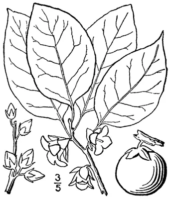

pranet · 出典付きの植物図鑑
アメリカガキ
Diospyros virginiana L. · Ebenaceae

アメリカガキ は、柿の一種で、一般に"American Persimmon"、または“Common Persimmon”、“Eastern Persimmon”、“'Simmon”、“Possumwood”、“Sugar-plum”と呼ばれる。コネチカット南部／ロングアイランドからフロリダまで、西はテキサスとルイジアナ、オクラホマ、カンザスまで分布する。木は野生で育つが、先史時代よりアメリカ先住民によって、その果実と木材のために栽培されてきた。
出典: Wikipedia 日本語版「アメリカガキ」 · CC BY-SA 4.0
異名: Diospyros angustifolia Audib. ex Spach, Diospyros calycina Audib. ex Spach, Diospyros caroliniana Muhl. ex Raf., Diospyros ciliata Raf., Diospyros concolor Moench, Diospyros coronaria Mottet, Diospyros digyna Loudon, Diospyros distyla K.Koch, Diospyros fertilis Loudon, Diospyros guaiacana C.C.Robin, Diospyros intermedia Loudon, Diospyros lucida Loudon, Diospyros mosieri Small, Diospyros persimon Wikstr., Diospyros pubescens Pursh, Diospyros stricta Loudon, Diospyros undulata Hiern, Persimon virginiana (L.) Raf.
同定や利用は自己責任でお願いします。この図鑑だけを根拠に野生の植物を食べないでください。
出典
- 学名: World Flora Online Plant List 2026-06 · CC0 1.0
- 名前: Wikipedia の記事名と Wikidata · CC0 1.0（Wikidata）。記事名は事実
- 説明: Wikipedia 日本語版「アメリカガキ」 · CC BY-SA 4.0
- 食用・毒性: World Checklist of Useful Plant Species (Diazgranados et al. 2020, RBG Kew) · CC BY 4.0
- 分布: World Checklist of Vascular Plants (WCVP), RBG Kew, version 2026-06-04 · CC BY 3.0
このページは pranet のデータから自動生成しています。コードは MIT、データは項目ごとのライセンス（説明）。